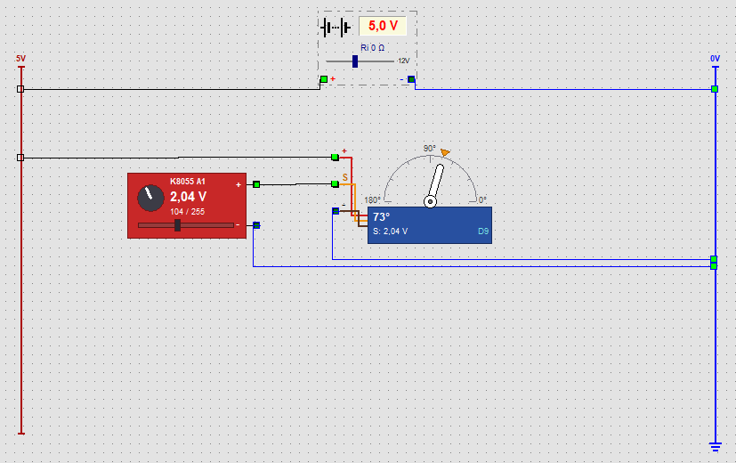

A Velleman K8055A Velleman K8055
A Velleman K8055A Velleman K8055Logic can also use a Velleman K8055 (or the ready-made VM8055): a USB experiment board with push buttons and LEDs on it. You do not need to install or connect anything to start: press a button on the board, and a circuit in Logic lights an LED on the board.
| Button | Name | What is it? |
|---|---|---|
| K8055 input | A push button with two terminals in the circuit. It is closed as long as the real input is on. Inputs 1, 2 and 3 each have a push button on the board (INP1, INP2, INP3). Connect your own button between the input and GND. Without a board you press it with the mouse. | |
| K8055 output | A 5 V lamp with two terminals. When it lights (e.g. on the output of a gate), Logic switches on the real output, and the LED on the board for that output lights. |
| K8055 analog input | A voltage source from 0 to 5 V with two terminals (+ at the top, − at the bottom). With the board, the voltage follows the knob A1 or A2 on the board (or a sensor on that input); without a board you set it with the slider. Right-click: A1 or A2. |
Right-click to choose the input (INP1 to INP5) or the output (OUT1 to OUT8). The two buttons are in the component bar at level Advanced, next to those of the Arduino board. You may use a K8055 and an Arduino together.
There is nothing to do. Plug the board into the USB port and put a K8055 input or output on the panel: within two seconds it is connected. The label K8055 INP1 above the push button then turns red instead of grey, and the hint says "The K8055 is connected". Unplug the board and everything works on the screen again.

The K8055 has two analog inputs, A1 and A2. They measure a voltage from 0 to 5 V in 256 small steps (0 to 255). Each input already has a knob on the board. The K8055 analog input in Logic is a small source that gives exactly that voltage: turn the knob, and the voltage in your circuit on the screen changes.

An output of the K8055 gives no voltage: it works as a switch to GND (open collector). When the output is on, its terminal (e.g. O1) is connected to GND. So you need a plus yourself, for example the 5V of your Arduino. Put your part between that 5V and the output terminal, and connect GND of the Arduino to GND of the K8055.
| What | How |
|---|---|
| LED | 5V → 220 Ω resistor → long leg of the LED; short leg → O1 |
| Active buzzer | 5V → the + leg (the long one); the other leg → O1 |
| Small relay (5 V) | 5V → coil → O1; also connect the CLAMP terminal to the 5V |
/dev/hidraw…. Create the file
/etc/udev/rules.d/99-k8055.rules with the line
SUBSYSTEM=="hidraw", ATTRS{idVendor}=="10cf", MODE="0666" and plug the board in again.